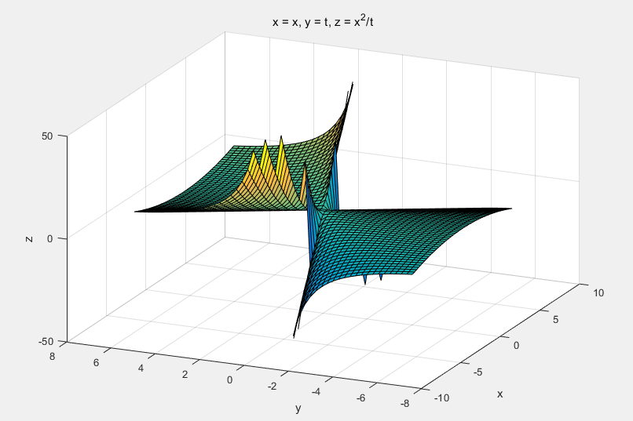
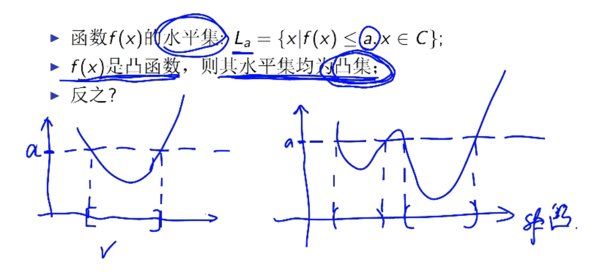

凸函数的定义与性质
凸函数的定义
设$C$是非空凸集，$f$是定义在$C$上的函数，若对任意$x,y\in C,\alpha \in (0,1)$，都存在
- 则称函数$f$是凸函数
- 若大于等于号变成大于号，则为严格凸函数
- 小于号代表凹函数，凹凸的方向与字型相反
常见的凸函数
- 线性函数$y=a^Tx+b$
- 二次函数$y=x^TQx+a^Tx+b, Q\in S_{+}^n$
- 最小二乘函数$f(x)=|Ax-b |^2_2$
- $p$范数$f(x) = (\sum_i^n|x_i|^p)^{1/p}, p\ge 1$
- $p=0$的时候范数不满足凸函数要求，0范数代表$x$中非零的元素数目
- 二次型矩阵需要是半正定矩阵
- 最小二乘类似二次函数，由于其二次型函数为$A^TA$，保证了一定为半正定矩阵
凸函数的性质
若$f(x)$是凸函数
- 一定是连续函数
- $\forall a,b \in R^n, \varphi(x)=f(x+\alpha y)$也是凸函数，需要注意$a,b$一旦选定后为定值。可以视作$ab$点连线对原凸函数的切面。切面得到的函数仍是凸函数。例如对一个二维的抛物面用切线剖开，得到的是凸函数抛物线。
- 等价于$f(y)\ge f(x)+\bigtriangledown f(x)^T(y-x)$.在图形上为凸函数在任意点的切面上方。
- 若$f(x)$二阶可微，则凸函数等价于Hesse矩阵为半正定矩阵。类似于$f(x)$任一点二阶导数大于等于零，从图形上来看是斜率一直在增加。
保证凸函数性质的运算
- 透视函数
若$f(x)$是凸函数，构造了一个新函数$g(x,t)=tf(x/t),t>0$
$g(x)$也是凸函数

- 非负组合
- 凸函数求最大
和凸集关系
若函数为凸函数，则水平集一定是凸集

反过来是不成立的